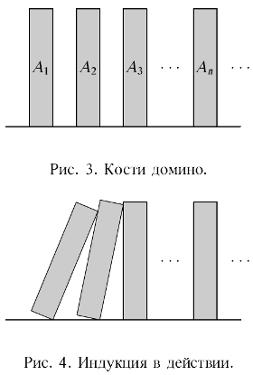

Метод математической индукции#
Идея метода#
Источник: Шень - Математическая индукция
Допустим, мы хотим доказать последовательность утверждений \(A_1, A_2, \ldots, A_n, \ldots\) Эта последовательность может быть конечной или бесконечной.
Идея метода математической индукции - последовательно доказывать утверждения шаг за шагом, используя при этом уже доказанные ранее утверждения.
Таким образом, обосновав переход
\(A_1, A_2, \ldots, A_{k-1} \to A_k\)
получаем истинность всех утверждений
\(A_1, A_2, \ldots, A_n, \ldots\)

Иллюстрация - кости домино. Если упадет первая из них, то упадут по очереди и все остальные (падая, костяшка толкает следующую).
Пример. (вежливая очередь) Правила хорошего тона запрещают мужчине стоять в очереди сразу перед женщиной (он должен пропустить ее вперед). Поэтому, если первый человек в очереди - мужчина, то и все остальные - мужчины.
\(A_k = \) “\(k\)-й человек в очереди - мужчина”
Для любого \(k = 1..n-1\) ситуация \(A_k = 1\), \(A_{k+1} = 0\) запрещена (ложна). Следовательно, импликация \(A_k \to A_{k+1}\) истинна.
Итак,
\(\dfrac{\begin{align}& A_1 = 1\\& \forall k \, (A_k \to A_{k+1}) \end{align}}{\forall n\, A_n}\)
В этой формуле обозначен принцип математической индукции.
Несложные примеры#
Источник: Хаггарти - Дискретная математика для программистов
Пример. (сумма арифметической прогрессии)
Докажем по индукции, что равенство
\(1 + 2 + \ldots + n = \dfrac{n(n+1)}{2}\) выполнено при всех натуральных \(n\).
Пусть \(A_n\) обозначает утверждение для числа \(n = 1, 2, 3, \ldots\)
Например:
\(A_1: \quad 1 = \dfrac{1 (1+1)}{2}\)
\(A_2: \quad 1 + 2 = \dfrac{2(2+1)}{2}\)
\(A_3: \quad 1 + 2 + 3 = \dfrac{3(3+1)}{2}\)
и так далее.
Схема доказательства методом математической индукции включает 3 этапа:
База индукции: доказываем утверждение \(A_1\)
Гипотеза индукции: предполагаем, что утверждение \(A_k\) истинно
Шаг индукции: выводим \(A_{k+1}\) из \(A_k\)
База индукции:
\(1 = \dfrac{1 + 1}{2}\) - верное утверждение
Гипотеза индукции: допустим, что
\(1 + 2 + \ldots + k = \dfrac{k(k+1)}{2}\)
Шаг индукции: докажем, что
\(1 + 2 + \ldots + k + (k + 1) = \dfrac{(k + 1)((k + 1) + 1)}{2}\)
Для этого сгруппируем первые \(k\) слагаемых в левой части равенства и заменим их сумму на \(\dfrac{k(k+1)}{2}\) (используем гипотезу индукции).
\(\dfrac{k(k+1)}{2} + (k + 1) = \dfrac{(k + 1)((k + 1) + 1)}{2}\)
Несложные преобразования показывают, что это верное равенство. Утверждение доказано методом математической индукции.
Пример. При любом \(n \in \mathbb N\) число \(7^n - 1\) кратно \(6\).
База индукции: \(n = 1 \; \Rightarrow \; 7^1 - 1 = 6 \,\vdots\, 6\)
Гипотеза индукции: \(n = k \; \Rightarrow \; (7^k - 1) \, \vdots \, 6\) - утверждение верно
Шаг индукции: \(n = k + 1 \; \Rightarrow \;\) докажем, что \((7^{k+1} - 1) \,\vdots\, 6\).
\(7^{k+1} - 1 = 7 \cdot (7^k - 1) + 7 - 1 = 7 \cdot (7^k - 1) + 6\)
Так как \((7^k - 1) \, \vdots \, 6\), то \(7 \cdot (7^k - 1) \, \vdots\, 6\).
Оба слагаемых делятся на \(6\) \(\Rightarrow\) вся сумма делится на \(6\). Утверждение доказано.
Пример. Пусть числа \(x_1, x_2, \ldots, x_n\) таковы, что \(x_1 = 1\), \(x_{k+1} = x_k + 8k\) при \(k \geq 1\). Докажем, что \(x_n = (2n - 1)^2\), \(n = 1, 2, 3, \ldots\)
Б.и. \(x_1 = 1 = (2 \cdot 1 - 1)^2\)
Г.и. \(x_k = (2k - 1)^2\) - верное утверждение
Ш.и. Докажем, что \(x_{k+1} = (2(k+1) - 1)^2 = (2k+1)^2\).
В самом деле,
\(x_{k+1} = x_k + 8k = (2k-1)^2 + 8k =\)
\(= 4k^2 - 4k + 1 + 8k = (2k+1)^2\)
Таким образом, из истинности утверждения при \(n = k\) вытекает истинность при \(n = k + 1\).
Примеры посложнее#
Источник: Вялый и др. - Лекции по дискретной математике
Пример. Докажем, что
\( \dfrac{1}{1^2} + \dfrac{1}{2^2} + \ldots + \dfrac{1}{100^2} < 2. \)
Чтобы применить метод математической индукции, обобщим это утвежрждение. А именно, будем доказывать, что для любого \(n > 1\) выполняется неравенство
\( \dfrac{1}{1^2} + \dfrac{1}{2^2} + \ldots + \dfrac{1}{n^2} < 2 - \dfrac{1}{n}. \)
Это утверждение \(A_n\).
Согласно методу математической индукции, сформулируем утверждения \(A_2\), \(A_k\) и \(A_{k+1}\) и докажем, что \(A_2\) верно и из \(A_k\) следует \(A_{k+1}\). Тогда, согласно принципу математической индукции, мы получим, что \(A_n\) верно для каждого \(n = 2, 3, 4, \ldots\).
\(A_2: \quad \dfrac{1}{1^2} + \dfrac{1}{2^2} < 1 - \dfrac{1}{2}\) - верное утверждение
\(A_k: \quad \dfrac{1}{1^2} + \dfrac{1}{2^2} + \ldots + \dfrac{1}{k^2} < 2 - \dfrac{1}{k}\) - предположение индукции
\(A_{k + 1}: \quad \dfrac{1}{1^2} + \dfrac{1}{2^2} + \ldots + \dfrac{1}{k^2} + \dfrac{1}{(k+1)^2} < 2 - \dfrac{1}{k + 1}\) - то, что требуется доказать
Используя \(A_k\), получаем, что, если прибавить к левой и правой частям неравенства \(A_k\) число \(\dfrac{1}{(k+1)^2}\), получим неравенство
\( (*) \quad \dfrac{1}{1^2} + \dfrac{1}{2^2} + \ldots + \dfrac{1}{k^2} + \dfrac{1}{(k+1)^2} < 2 - \dfrac{1}{k} + \dfrac{1}{(k+1)^2}, \)
которое тоже верно, так как предположение индукции \(A_k\) считается верным при некотором \(k\).
Остается оценить правую часть полученного неравенства, воспользовавшись неравенством \(k(k+1) < (k+1)^2\), из которого вытекает, что \(\dfrac{1}{(k+1)^2} < \dfrac{1}{k(k+1)}\):
\( 2 - \dfrac{1}{k} + \dfrac{1}{(k+1)^2} < 2 - \dfrac{1}{k} + \dfrac{1}{k(k+1)} = ? \)
Если продолжить упрощать правую часть этого неравенства, мы получим в точности \(2 - \dfrac{1}{k+1}\). Таким образом, \( (**) \quad 2 - \dfrac{1}{k} + \dfrac{1}{(k+1)^2} < 2 - \dfrac{1}{k+1}. \)
Если из неравенств (*) и (**) сделать цепочку неравенств, придем к такому неравенству:
\( \dfrac{1}{1^2} + \dfrac{1}{2^2} + \ldots + \dfrac{1}{k^2} + \dfrac{1}{(k+1)^2} < 2 - \dfrac{1}{k+1} \)
Но это и есть утверждение \(A_{k+1}\), которое мы вывели из \(A_k\). Утверждение \(A_n\) верно для любого \(n > 1\) по принципу математической индукции.
Пример. Докажем, что для всякого натурального числа \(n\) число \(5 \cdot 9^{n-1} + 2^{4n-3}\) делится на \(7\).
Индукция по \(n\).
База индукции: \(n = 1\) \(\Rightarrow\) \(5 \cdot 9^0 + 2^1 = 7\) делится на \(7\) - утверждение верно
Гипотеза индукции: считаем, что утверждение верно при \(n = k\), то есть \(9^{k-1} + 2^{4k-3}\) делится на \(7\).
Шаг индукции: докажем, что в предположении индукции утверждение верно и при \(n = k + 1\), то есть \(9^k + 2^{4k+1}\) делится на \(7\).
Из предположения индукции следует, что \(9^{k-1} + 2^{4k-3} = 7m\), где \(m\) - некоторое целое число. Выразим отсюда первое слагаемое: \(9^{k-1} = 7m - 2^{4k-3}\).
Тогда (см. шаг индукции)
\(9^k + 2^{4k+1} = 9 \cdot 9^{k-1} + 2^{4k+1} = 9 \cdot (7m - 2^{4k-3}) + 2^{4k+1} =\)
\(= 7\cdot 9m + 2^{4k-3} \cdot (2^4 - 9) = 7(9m + 2^{4k-3})\)
Итак, \(9^k + 2^{4k+1}\) делится на 7, что и требовалось доказать.
Геометрические задачи на индукцию#
Источники: Зуев - По океану дискретной математики; Вялый и др. - Лекции по дискретной математике; Николаева - Метод математической индукции
Пример. Пусть на плоскости проведено \(n\) прямых, причем среди них нет параллельных, и никакие три прямые не пересекаются в одной точке. Плоскость разбивается прямыми на некоторое число областей. Докажите, что число областей равно \(\dfrac{n^2 + n + 2}{2}\).
Пример для \(n = 3\):

Новая прямая добавляет \(n + 1\) новых областей!
(Эта прямая пересекает \(n\) прямых, а потому проходит через \(n + 1\) старых частей, рассекая каждую из них на две.)

Упражнение. Проведите выкладки по индукции.
Пример. Докажите, что сумма углов выпуклого \(n\)-угольника равна \((n-2)\cdot 180^\circ\).
Разобьем \((n+1)\)-угольник на \(n\)-угольник и треугольник. Из рисунка видим, что при увеличении \(n\) на \(1\) к сумме углов многоугольника добавляется сумма углов треугольника, то есть \(180^\circ\).
Пример. Пусть выпуклый 1000-угольник разрезан на треугольники диагоналями, которые не пересекаются во внутренних точках (но могут иметь общие вершины). Докажите, что получилось 998 треугольников.
Докажем по индукции общее утверждение, что если выпуклый \(n\)-угольник (при \(n \geq 3\)) разрезан на треугольники диагоналями, то этих треугольников \(n - 2\). Итак, докажем это для какого-то \(n\), считая известным для всех меньших \(n\).
Посмотрим на какую-то диагональ, по которой разрезали. (Если диагоналей нет, то \(n = 3\) и этот треугольник уже разрезан на \((n - 2)\) треугольников.) С одной стороны будет какой-то \(k\)-угольник, а с другой стороны - какой-то \(l\)-угольник. Оба числа \(k\) и \(l\) будут меньше \(n\). При этом \(k + l\) будет равно \(n + 2\), поскольку, считая вершины сначала \(k\)-угольника, а потом \(l\)-угольника, мы посчитаем все вершины многоугольника, причём концы диагонали посчитаем дважды.
По предположению индукции при разрезании на треугольники получится \((k-2)\) и \((l-2)\) треугольников, всего \((k-2) + (l-2) = k + l - 4 = (n + 2) - 4 = (n - 2)\) треугольников, что и требовалось доказать.
Упражнение. Докажите, что при каждом натуральном \(n\), начиная с \(3\), существует выпуклый \(n\)-угольник, имеющий ровно три острых угла.
Подсказка. Пусть есть такой \((K-1)\)-угольник. Возьмём один из его тупых углов и отрежем его. Число вершин станет \(K\). Новые два угла, появившиеся вместо старого, будут ещё тупее, так как они - внешние углы отрезанного треугольника.
Комбинаторный пример#
Источник - лекции УрФУ
Задача. Доказать, что \(n\)-элементное множество имеет \(2^n\) подмножеств.
Например:
\(\{1\} \quad \longrightarrow \quad \varnothing, \{1\}\)
\(\{1, 2\} \quad \longrightarrow \quad \varnothing, \{1\}, \{2\}, \{1, 2\}\)
\(\{1, 2, 3\} \quad \longrightarrow \quad ?\)
Закономерность подтверждается, но доказательства в общем случае у нас пока нет.
А зачем доказательство? Вообще “подход тестировщика” может привести к ошибке.
Пример Эйлера. Многочлен \(p(x) = x^2 + x + 41\) принимает простые значения при \(x = 1, 2, 3, \ldots, 38, 39\).
“Закономерность подтверждается.”
\(p(40) = 1600 + 40 + 41 = 1681 = 41^2\) - составное число
Упражнение. Докажите, что никакой многочлен с целыми коэффициентами не может принимать простые значения при всех натуральных значениях переменной. (подсказка)
Решение задачи:
Пусть исходное множество \(S\) содержит \(n\) элементов. Добавим к \(S\) “новый” элемент \(x\):
\(S' := S \cup \{x\}\)
Каждое подмножество \(M' \subset S'\), которое содержит элемент \(x\), можно представить как
\(M' = \{x\} \cup M\), где \(M \subset S\).
Из этого наблюдения вытекает, что при добавлении одного элемента к множеству количество подмножеств удваивается: для каждого подмножества \(M \subset S\) добавляется ровно одно “новое” подмножество \(\{x\} \cup M\).
Итак, база индукции: в пустом множестве (\(n = 0\)) ровно одно подмножество - само это множество \(\varnothing\).
Сделаем шаг индукции: докажем, что если в любом \(n\)-элементном множестве \(2^n\) подмножеств, то в любом \((n+1)\)-элементном множестве \(2^{n+1}\) подмножеств.
Пусть \(S\) - любое \((n+1)\)-элементное множество. Выделим в нем любой элемент \(a \in S\). Разобьем множество подмножеств \(\mathcal P(S)\) на два подмножества: \(\{M \in \mathcal P(S) \colon M \text{ содержит } a\}\) и \(\{M \in \mathcal P(S) \colon M \text{ не содержит } a\}\). Второе подмножество совпадает в точности с множеством \(\mathcal P(S \setminus \{a\})\) - это множество всех подмножеств \(n\)-элементного множества \(S \setminus \{a\}\) - таких подмножеств \(2^n\) (по гипотезе индукции). А первое подмножество находится во взаимно однозначном соответствии со вторым, поэтому в нём также \(2^n\) элементов. Значит, \(|\mathcal P(S)| = 2^n + 2^n = 2^{n+1}\).
Упражнение. На встрече компании из 15 человек некоторые из участников пожали друг другу руки. Могло ли получиться так, что каждый из 15 участников сделал три рукопожатия (пожал руки трём другим)? Докажите, что нет.
“Ложная” индукция#
Пример. Докажем, что все кошки одного цвета.
Применим метод математической индукции, чтобы доказать, что любые \(n\) кошек одного цвета.
База индукции. При \(n = 1\) получаем верное утверждение: одна кошка одного цвета с самой собой.
Гипотеза индукции. Допустим, что любые \(k\) кошек одного цвета.
Шаг индукции. Докажем, что тогда любые \(k + 1\) кошек одного цвета. Расположим \(k + 1\) выбранных кошек в ряд. Первые \(k\) из них одного цвета по гипотезе индукции. Последние \(k\) из них тоже одного цвета по гипотезе индукции. Следовательно, все \(k + 1\) кошек одного цвета.
Где ошибка?
Пример. Докажем, что произведение любых \(n \geq 0\) чисел равно нулю, используя индукцию по \(n\).
База индукции. При \(n = 0\) сомножителей нет, так что перемножать нечего.
Гипотеза индукции. Пусть утверждение верно для некоторого \(n\), т.е. произведение любых \(n\) чисел \(a_1, a_2, \ldots, a_n\) равно нулю.
Шаг индукции. Докажем то же утверждение для любых \((n+1)\) чисел \(a_1, a_2, \ldots, a_{n+1}\). Рассуждая по индукции, мы считаем известным, что
\( a_1 \cdot a_2 \cdot \ldots \cdot a_n = 0 \)
Умножим это равенство на \(a_{n+1}\), получится
\( a_1 \cdot a_2 \cdot \ldots \cdot a_n \cdot a_{n+1} = 0 \cdot a_{n+1} = 0, \)
что и требовалось.
Где ошибка?
Упражнение. Найдите ошибку в следующем доказательстве. Докажем, что для любого положительного числа \(n\) выполняется равенство
\( \dfrac{1}{1\cdot 2} + \dfrac{1}{2 \cdot 3} + \ldots + \dfrac{1}{(n-1)n} = \dfrac{3}{2} - \dfrac{1}{n} \)
База индукции. При \(n = 1\) получаем
\( \dfrac{1}{1\cdot 2} = \dfrac{3}{2} - \dfrac{1}{1}. \)
Шаг индукции. Предположим, что для некоторого \(n\) равенство выполнено. Выведем отсюда такое же равенство для \(n + 1\). Получим
\( \dfrac{1}{1\cdot 2} + \dfrac{1}{2 \cdot 3} + \ldots + \dfrac{1}{(n-1)n} + \dfrac{1}{n(n+1)} = \)
\( = \dfrac{3}{2} - \dfrac{1}{n} + \left(\dfrac{1}{n} - \dfrac{1}{n+1}\right) = \)
\( = \dfrac{3}{2} - \dfrac{1}{n+1} \)
Итак, если равенство верно для \(n\), то оно должно быть верным и для \(n + 1\). По индукции равенство верно для всех \(n\).
Принцип наименьшего числа#
Источник: Вялый и др. - Лекции по дискретной математике
Принцип математической индукции можно переформулировать, используя принцип наименьшего числа.
Принцип наименьшего числа. Если есть натуральное число, обладающее каким-то свойством, то найдется и наименьшее число с этим свойством.
Это выражается следующей формулой:
\( \exists n\, P(n) \to \exists n_0 \forall n (P(n) \to n \geq n_0) \)
Пример. Докажем, что любую сумму в \(n\) копеек, где \(n \geq 8\), можно заплатить трёх- и пятикопеечными монетами. Возьмём наименьшую сумму, которую заплатить нельзя. Пусть это какое-то \(n_0\). Может ли \(n_0\) быть равно 8, 9 или 10? Нет, потому что мы знаем как заплатить столько. Значит, \(n \geq 11\) и \(n - 3 \geq 8\). Поскольку \(n\) было наименьшим “плохим” числом (которое нельзя заплатить) среди чисел от 8, то \((n - 3)\) заплатить можно. В чём противоречие? Понятно: \((n-3)\) заплатить можно, а \(n\) нельзя, хотя видно, что можно (надо добавить трёхкопеечную монету к \((n-3)\)).
Пример. Рассмотрим последовательность Фибоначчи:
\(1, 1, 2, 3, 5, 8, 13, 21, 34, \ldots\),
в которой первые два числа равны единице, а каждое следующее равно сумме двух предыдущих. Докажем, что в последовательности Фибоначчи нет двух подряд идущих чётных чисел.
Используем принцип наименьшего числа. Из всех пар соседних чётных членов последовательности возьмём первую: \(F_n, F_{n+1}\). Но поскольку \(F_{n+1} = F_{n-1} + F_n\), то из чётности \(F_n\) и \(F_{n+1}\) следует чётность \(F_{n-1}\). Следовательно, пара \(F_n, F_{n+1}\) не первая, потому что пара чётных чисел \(F_{n-1}\) и \(F_n\) первее.
Индукция по структуре#
Источник: Журавлев, Флёров, Вялый - Дискретный анализ. Формальные системы и алгоритмы
Пример. Докажем, что в любой формуле количество открывающих скобок равно количеству закрывающих скобок.
Индукция по длине формулы (количеству символов). Для формул, которые состоят из одной переменной, утверждение справедливо: \(0 - 0 = 0\). Других формул длины \(1\) нет. Это доказывает базу индукции.
Шаг индукции. Предположим, что утверждение справедливо для формул длины меньше, чем \(n\) (\(n > 1\)). Рассмотрим формулу \(A\) длины \(n\). Если корневая операция в формуле \(A\) унарная, то формула имеет вид \((*B)\), где \(*\) - операция. А если корневая операция бинарная, то формула имеет вид \((B * C)\). Здесь \(B\) и \(C\) - более короткие формулы, в которых одинаково количество открывающих и закрывающих скобок по предположению индукции. Но тогда и в формуле \(A\) количество открывающих и закрывающих скобок одинаково.
Неравенство Коши-Буняковского#
Источник: Шишмарёв - Дискретная математика
Для любых чисел \(a_1, \ldots, a_n\), \(b_1, \ldots, b_n\) выполняется неравенство
\( (a_1b_1 + a_2b_2 + \ldots a_nb_n)^2 \leq (a_1^2 + \ldots + a_n^2)(b_1^2 + \ldots + b_n^2) \)
Доказательство.
База индукции. \(n = 1\) \(\Rightarrow\) \((a_1b_1)^2 \leq a_1^2 b_1^2\) - верно
Гипотеза индукции. Допустим, что
\( (a_1b_1 + a_2b_2 + \ldots + a_kb_k)^2 \leq (a_1^2 + \ldots + a_k^2)(b_1^2 + \ldots + b_k^2) \)
Шаг индукции. Докажем, что отсюда вытекает
\( (a_1b_1 + a_2b_2 + \ldots + a_kb_k + a_{k+1}b_{k+1})^2 \leq (a_1^2 + \ldots + a_k^2 + a_{k+1}^2)(b_1^2 + \ldots + b_k^2 + b_{k+1}^2) \)
Раскроем скобки в левой части неравенства:
\( \begin{aligned} &(a_1b_1 + a_2b_2 + \ldots + a_kb_k + a_{k+1}b_{k+1})^2 = \\ &= (a_1b_1 + a_2b_2 + \ldots + a_kb_k)^2 + 2 a_{k+1}b_{k+1}(a_1b_1 + a_2b_2 + \ldots + a_kb_k) + (a_{k+1}b_{k+1})^2 \end{aligned} \)
Раскроем скобки в правой части неравенства:
\( \begin{aligned} &(a_1^2 + \ldots + a_k^2 + a_{k+1}^2)(b_1^2 + \ldots + b_k^2 + b_{k+1}^2) = (a_{k+1}b_{k+1})^2 + \\ &+ (a_1^2 + \ldots + a_k^2)(b_1^2 + \ldots + b_k^2) + a_{k+1}^2(b_1^2 + \ldots + b_k^2 ) + b_{k+1}^2 (a_1^2 + \ldots + a_k^2 ) \end{aligned} \)
Остается доказать, используя гипотезу
\( \begin{equation} \tag{1} (a_1b_1 + a_2b_2 + \ldots + a_kb_k)^2 \leq (a_1^2 + \ldots + a_k^2)(b_1^2 + \ldots + b_k^2), \end{equation} \)
следующее неравенство:
\( \begin{multline*} {\color{red}(a_1b_1 + a_2b_2 + \ldots + a_kb_k)^2} + 2 a_{k+1}b_{k+1}(a_1b_1 + a_2b_2 + \ldots + a_kb_k) \leq \\ \leq {\color{red} (a_1^2 + \ldots + a_k^2)(b_1^2 + \ldots + b_k^2)} + a_{k+1}^2(b_1^2 + \ldots + b_k^2 ) + b_{k+1}^2 (a_1^2 + \ldots + a_k^2 ) \end{multline*} \)
Докажем
\( \begin{multline} \tag{2} 2a_{k+1}b_{k+1}(a_1b_1 + a_2b_2 + \ldots + a_kb_k) \leq \\ \leq a_{k+1}^2(b_1^2 + \ldots + b_k^2 ) + b_{k+1}^2 (a_1^2 + \ldots + a_k^2 ) \end{multline} \)
Упражнение. Распишите преобразование этого неравенства к равносильной формуле
\( (a_{k+1}b_1 - a_1b_{k+1})^2 + (a_{k+1}b_2 - a_2b_{k+1})^2 + \ldots + (a_{k+1}b_k - a_kb_{k+1})^2 \geq 0 \)
Сложив (1) с (2), получим неравенство Коши-Буняковского.
Применение метода математической индукции к анализу алгоритмов#
Источники: Хаггарти - Дискретная математика для программистов; Haggard, Schlipf, Whitesides - Discrete mathematics for computer science
Пример. (поиск максимума в последовательности)
Вход: \(a_1, a_2, \ldots, a_n\) - натуральные числа
Выход: \(\max\{a_1, a_2, \ldots, a_n\}\)
Инициализация: \(M \leftarrow 0\)
Цикл:
for \(i \leftarrow 1..n\):
# инвариант цикла:
# \((i = 1 \,\&\, M = 0) \vee (i \geq 2 \,\&\, M = \max\{a_1, a_2, \ldots, a_{i-1}\})\)
\(M \leftarrow \max\{M, a_i\}\)
# Сделаем вывод:
# а) если \(i = 1 \,\&\, M = 0\), то \(M' = a_1 = \max\{a_1\}\)
# б) если \(i \geq 2 \,\&\, M = \max\{a_1, a_2, \ldots, a_{i-1}\}\), то
# \(M' = \max\{\max\{a_1, a_2, \ldots, a_{i-1}\}, a_i\} =\)
# \( = \max\{a_1, a_2, \ldots, a_i\}\)
Завершение: \(M = \max\{a_1, a_2, \ldots, a_n\}\)
Упражнение. Перепишите алгоритм, чтобы он работал для любых целых чисел \(a_i\). Снабдите псевдокод своего алгоритма логическими комментариями.
Пример. (двоичный поиск) Составим алгоритм, который найдёт в упорядоченном числовом массиве наибольший элемент, не превосходящий заданного числа.
Дана числовая последовательность \(a_1, a_2, \ldots, a_n\) и число \(x\). Выполняется условие \(a_1 \leq a_2 \leq \ldots \leq a_n\). Найти наибольший среди индексов \(i \in 1..n\), для которых выполняется условие \(a_i \leq x\), либо определить, что таких индексов нет.
Введем параметры \(l, r\) - границы рассматриваемого фрагмента массива. На каждом шаге алгоритма будет сохраняться логический инвариант: слева от индекса \(l\) находятся числа, меньшие либо равные \(x\), а справа от индекса находятся числа, большие \(x\). Это свойство выражается формулой
\( \forall i \in 1..n: (i < l \to a_i \leq x) \land (i > r \to a_i > x) \)
Если предположить (по индукции), что инвариант выполнен на текущем шаге, и доказать, что при переходе на следующий шаг инвариант сохранится, то можно утверждать (по принципу математической индукции), что инвариант будет выполняться вплоть до окончания цикла.
Выберем на интервале \(l..r\) средний элемент с индексом \(m=\left\lfloor \dfrac{l+r}{2} \right\rfloor\) и сравним его с \(x\). Если \(a_m\leq x\), то после присваивания \(l \leftarrow m + 1\) инвариант сохранится. Если \(a_m > x\), то после присваивания \(r \leftarrow m - 1\) инвариант сохранится.
После окончания итераций будет выполнено \(l = r+1\). Возможен случай \(r=0\) - тогда искомого индекса не существует. В противном случае искомый индекс равен \(r\).
Упражнение. Проверьте реализацию алгоритма на собственном наборе тестов.
# Вход: a – упорядоченный по возрастанию список,
# x – число
# Выход: индекс наибольшего элемента i:
# a[i] <= x или -1, если такого индекса нет
def upper_bound(a, x):
n = len(a)
l = 0
r = n – 1
while l <= r:
m = (l + r) // 2
if a[m] <= x:
l = m + 1
else:
r = m – 1
return r
Пример. (пирамидальная сортировка) При анализе алгоритма построения структуры данных “пирамида” доказывается, что сложность этого алгоритма \(O(m)\), где \(m\) - число элементов в пирамиде. Делается это при помощи следующего тождества (где \(m = 2^n\)):
\( 0 \cdot 2^n + 1 \cdot 2^{n-1} + 2 \cdot 2^{n-2} + 3 \cdot 2^{n-3} + \ldots + (n-1) \cdot 2^1 + n \cdot 2^0 = 2^{n+1} - n - 2 \)
Докажите его методом математической индукции.
Дополнительный материал#
Разберите самостоятельно задачу про солдат (Шень - Математическая индукция, с. 26).
Задавайте вопросы в комментариях.